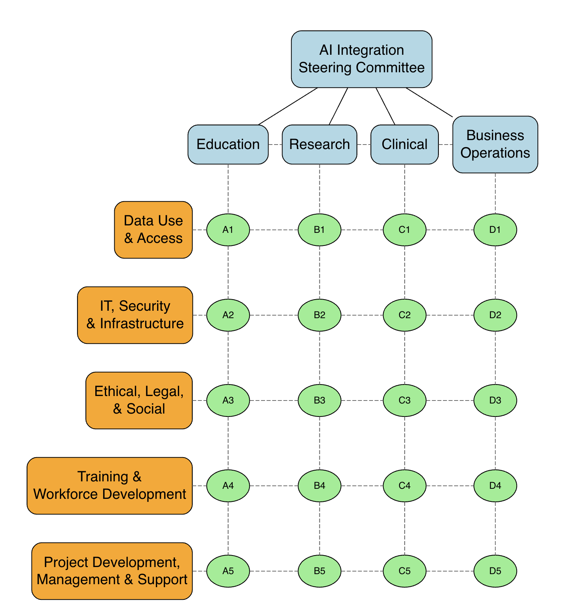
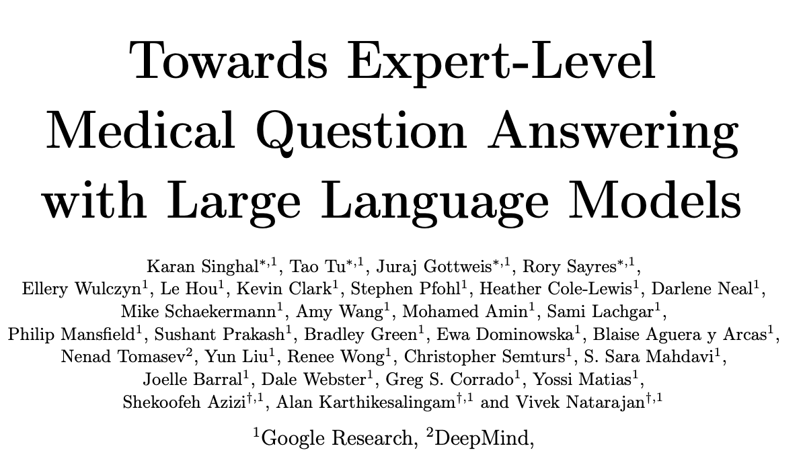
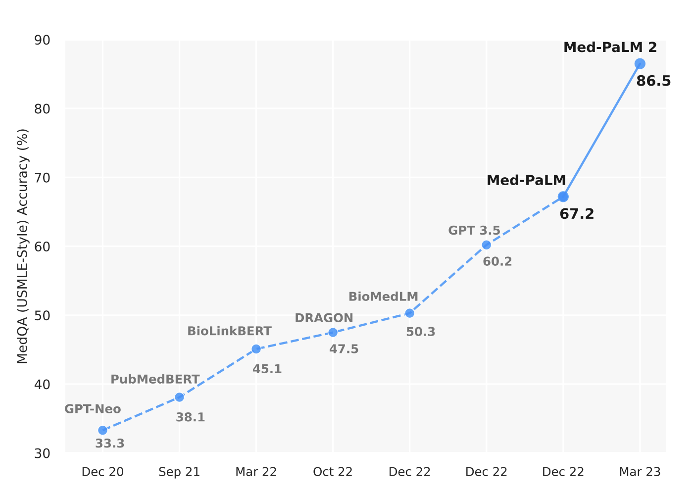
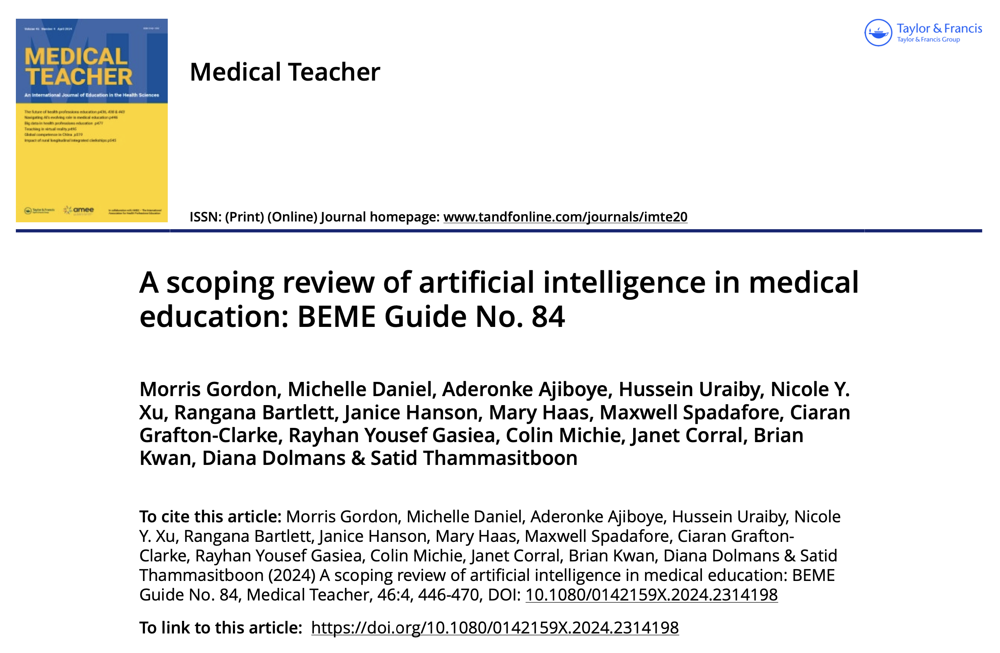
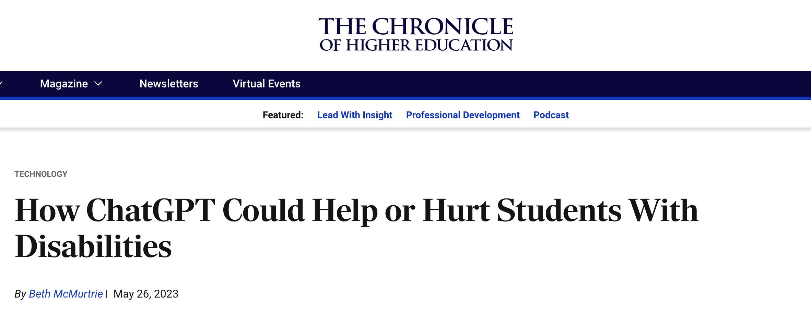
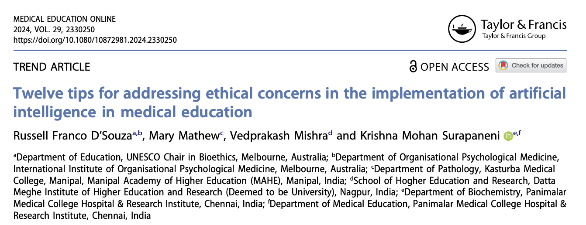
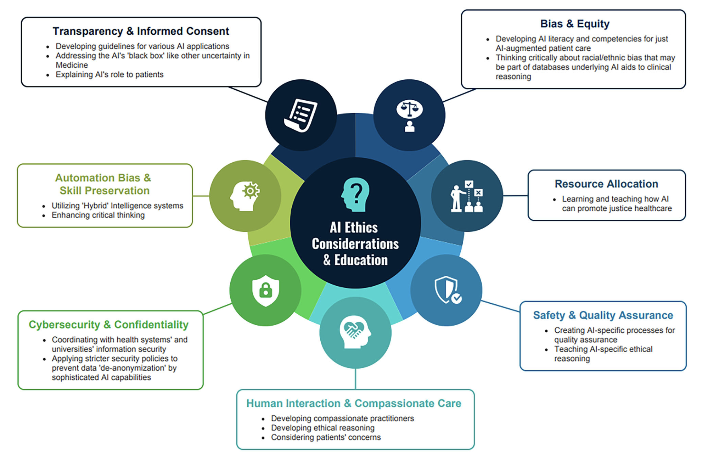
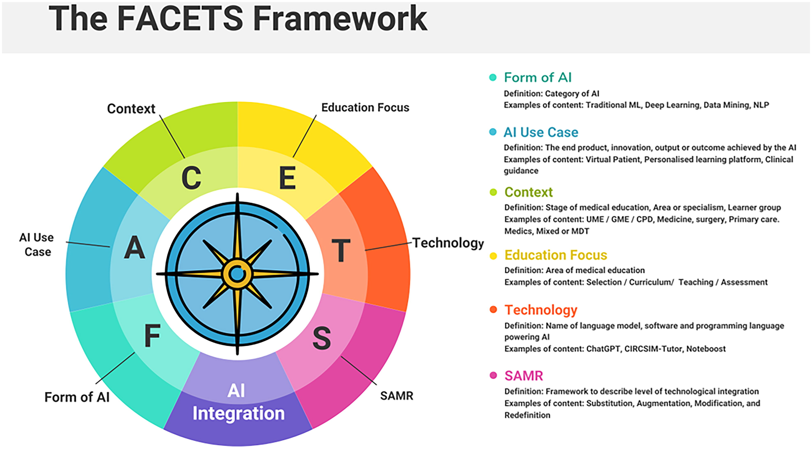

AI in Medical Education
Wednesday, October 23, 2024
“Maybe once every few decades a true revolution occurs in the way we teach medical students and what we expect them to be able to do when they become doctors. This is one of those times.”
– Bernard Chang, MMSc ’05, HMS dean for medical education, Speaking about ChatGPT and Generative AI in Medical Education
What we will not cover today
- Personal use of AI in medical education
- Many, many examples of AI in medical education
The academic medical center view

Hypothetical application of AI in education
You are on the faculty of a medical school that has proposed to use ChatGPT to help draft letters of recommendation for medical school residency programs for its students.
- What are your thoughts?
- What are some specific concerns and recommendations that you would recommend to faculty leaders?
What do LLMs know about medicine?

What do LLMs know about medicine?

Androgogy
In addition to mutual respect, collaboration, support, mutual trust, and fun, additional key drivers of adult learning include
- Building on experience: Adults learn by relating new information to their own experiences and the experiences of others.
- Learning by doing: Adults need time for application exercises to practice new skills and knowledge. Different learning styles and rates: Adults learn in different ways and at different rates, so use a variety of instructional methods.
- Knowing why they need to learn: Adults need to know why they need to learn something.
- Feeling responsible for learning: Adults need to feel responsible for their learning.
- Problem focused: Adults want their training to be problem focused.
- Intrinsic motivation: Adults learn best when motivation comes intrinsically.
- Feedback and interaction: builds confidence which is a large component of learning success.
General areas of AI in medical education
Scoping review of AI in medical education

AI for Admissions and Selection
- AI can improve the admissions process by:
- Predicting student success (AUC of 0.925 in one study).
- Analyzing application materials using sentiment analysis.
- Augmenting traditional holistic reviews.
- Example: ML models accurately ranked medical applicants based on retrospective data.
AI-Augmented Instruction
- AI for Personalized Education:
- Adaptive learning systems for tailoring content to individual student needs.
- Example: AI-driven tutoring systems providing real-time feedback during ultrasound training.
- AI-Enhanced Simulations:
- Virtual reality and AI-powered simulators used for surgery and clinical skills training.
- Example: Robotic surgery simulators to assess surgical competency.
AI in Teaching Clinical Reasoning
- Virtual Patient Simulators (VPS):
- AI-driven platforms simulate real patient encounters.
- Students interact with avatars or text interfaces, practicing hypothesis generation and clinical reasoning.
- Intelligent Tutoring Systems (ITS):
- Provides personalized feedback based on student inputs and performance.
- Example: NLP algorithms creating virtual patient case libraries.
AI in Assessments
- AI for Objective Structured Clinical Examinations (OSCE):
- AI enhances clinical skills assessments, reducing bias and logistical demands.
- AI can automate grading and real-time feedback during simulations.
- AI in Narrative Analysis:
- NLP for analyzing student reflections, faculty evaluations, and identifying bias in feedback.
- Example: AI assessed medical narratives for professionalism and clinical competency.
AI-Generated Multiple Choice Questions
- AI can create and assess multiple-choice questions for exams.
- ChatGPT has been widely tested, with mixed results in MCQ creation.
- Example: LLMs (Large Language Models) were tested on national licensure exams and performed comparably to humans in many cases.
AI for Procedural Skills and Automation
- AI aids in documenting procedural and clinical experiences.
- NLP algorithms track clinical logs and case experiences, boosting accuracy and efficiency.
- Example: AI systems tracking neurology resident experiences, tripling the logged cases.
Attitudes Toward AI in Medical Education
- Mixed perceptions on AI’s role:
- Many students recognize AI’s benefits, such as enhanced clinical decision-making.
- Concerns about AI’s impact on doctor-patient relationships and potential over-reliance on technology.
- Calls for comprehensive AI curricula to prepare future physicians for AI integration.
Ethical Considerations
- Bias and equity: AI models trained on non-representative data may exacerbate healthcare disparities.
- Transparency: Students must understand the ethical implications of AI’s involvement in clinical decisions.
- Automation Bias: Students must maintain critical thinking skills and not overly rely on AI outputs.
- Example: AI in admissions can help reduce bias in holistic reviews but also risks introducing new biases.
You are now educators!
Generative AI is a powerful tool that can be used to enhance the learning experience for medical students. However, it is important to establish clear policies and expectations for its use in the classroom.
A sampling of policies from various institutions
Thinking about academic integrity
- Is there such a thing as “ChatGPT-proofing” your assignments?
- The better question to ask is, “why do students plagiarize?”
- The student may feel like they don’t know what a successful submission is, fear failing, or simply think something that wasn’t written specifically for the class can pass muster.
- How do we approach building our assignments so there is trust between the instructor and student?
- The instructor trusts that students will approach the assignment with motivation and a desire to put their own voice into the work.
- The student trusts that the work they’re doing is meaningful and worth any struggle or challenges they come across.
Appeals for academic integrity
Most institutions include a formal academic code of conduct. However, it is often helpful to remind students of the importance of academic integrity and the consequences of cheating. Here are some appeals that can be used to encourage students to maintain academic integrity.
Academic integrity: Logical appeal
Cheating diminishes the value of this credential/course/degree. There will very soon come a time when you will need the skills and knowledge being assessed in this course, and you don’t want to find yourself in a position in which your pre-requisite/credentialed knowledge is fraudulent.
Academic integrity: Emotional (moral) appeal
Cheating is a temptation, of course, but it’s your personal integrity on the line. We are [NAME OF INSTITUTION] (YOU are [NAME OF INSTUTION]), and we are called to do the right thing.
Academic integrity: Personal appeal
As I have made every effort to continue our class’s sense of community and purpose, I’m asking you to make every effort to be honest and honorable in the demonstration of what you have learned in our class.
Policies on AI use in the classroom
Content-generating AI is NOT Allowed:
- Under this category, the use of AI tools is strictly prohibited. These syllabi are clear that work produced by students must be entirely original, and the use of AI-generated content will be considered academic misconduct.
- Statements falling into this category emphasize the core value of academic originality and stress the importance of mastering subjects without undue reliance on technological shortcuts.
Policies on AI use in the classroom
Content-generating AI is Allowed with Appropriate Attribution:
- Policies in this grouping permit the use of AI for certain tasks or specific assignments, provided it is properly attributed. Students must clearly identify any writing, text, or media generated by AI when submitting work. They are also responsible for the accuracy of any generated content.
- Syllabi in this group might specify, for instance, that if a student employs AI tools like ChatGPT to generate content, this fact must be clearly indicated in their submission. The emphasis is on transparency and understanding the origin of academic materials.
Policies on AI use in the classroom
Content-generating AI Use is Allowed in LIMITED Instances
- This grouping offers a middle ground. While AI is not entirely banned, its use is curtailed to very specific instances or types of assignments.
- Syllabi in this category might allow AI tools for preliminary stages of research, brainstorming, or concept development, but not for final submissions. Here, AI is viewed as an assistant rather than a creator, helping students in the preparation and formulation, but not execution of their academic tasks.
Policies on AI use in the classroom
Content-generating AI Use is Encouraged Broadly
- The most progressive of the groupings, these policies embrace AI as a significant component of a rapidly evolving tech landscape.
- These syllabi might encourage students to explore AI’s capabilities, suggesting that they employ these tools in various assignments to understand their potential and limitations. However, they still emphasize the importance of integrity, ensuring students do not misuse AI, but rather incorporate it as part of a holistic learning experience.
Operationalizing AI in Medical Education
Recognize that AI in medical education is STILL about education

Tips for addressing ethical concerns of AI in medical education
This article discusses the ethical challenges that arise with the integration of artificial intelligence (AI) in medical education. The authors present twelve practical tips to guide medical educators in addressing these ethical issues and ensuring the responsible use of AI in educational settings.
Ethical framework for AI in medical education

Tips for addressing ethical concerns of AI in medical education
- Ensure transparency in AI development and deployment.
- Address biases in AI algorithms to ensure fair educational representation.
- Validate AI-generated educational content for accuracy and credibility.
- Prioritize privacy with robust measures for protecting student and patient data.
Tips for addressing ethical concerns of AI in medical education
- Obtain informed consent from students and stakeholders for AI usage.
- Foster collaboration between AI experts, educators, and students.
- Conduct faculty development programs on AI ethics.
- Provide student education on AI’s implications in medical education.
Tips for addressing ethical concerns of AI in medical education
- Ensure ongoing maintenance of AI algorithms for performance and reliability.
- Establish clear lines of accountability for AI systems.
- Enhance regulatory awareness of AI standards in healthcare and education.
- Form ethics committees or engage institutional review boards for ethical oversight of AI.
Understanding the AI ecosystem at your institution
FACETS framework to report future AI innovations in medical education.